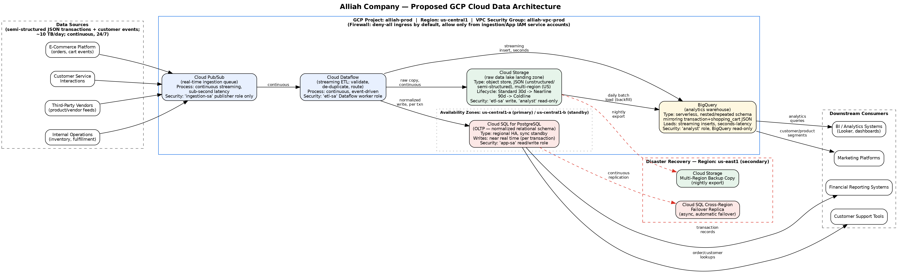
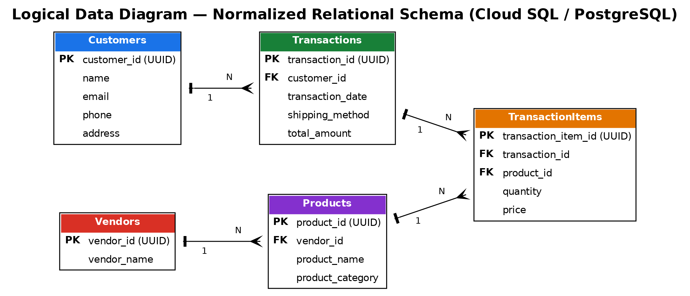
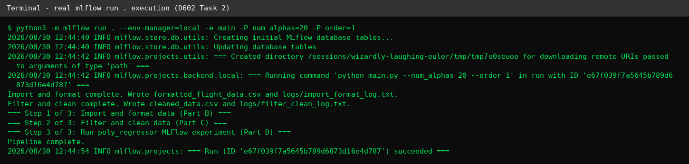

I work at the intersection of data engineering, cloud architecture, and applied analytics: building pipelines that move and validate data, designing systems that store it correctly, and building the models that turn it into a decision.
Day to day, I work in product enablement at Modernizing Medicine, where I build internal LLM tooling in Python, analyze operational data with SQL and JQL, and troubleshoot integration issues across cloud services. Outside of that role, I design and ship end to end data systems on my own: orchestrated ETL pipelines in Apache Airflow, a proposed cloud data warehouse architecture on GCP, and regression and PCA models trained on real datasets, all of which you can see and run for yourself below.
Before moving into data work, I spent several years in technical support and IT operations at Apple, Teleperformance, and Houghton Mifflin Harcourt, and hold an Associate of Arts and Sciences in Information Technology in addition to a Bachelor's in Data Analytics and Artificial Intelligence. I am currently completing a Master of Science in Data Analytics and Data Engineering.
Languages
Data Engineering
Cloud & Infrastructure
Analytics & Modeling
Product Enablement Specialist III & Tech Services AI Gem Leader
- Lead AI tool adoption for the department as designated Gem Leader, including intake, rollout, and internal enablement of new tools.
- Built the Fax Flow Assistant, an LLM tool automating compliance review of legal documents with structured document scanning logic.
- Independently learned Python to build Ask PE, a desktop application with an integrated AI knowledge base for internal documentation.
- Used JQL and Salesforce reporting to identify and prove a recurring routing bottleneck, presenting findings and a fix at the CS Town Hall.
Product Enablement Specialist II
- Central point of contact for cross functional workflows across Cloud Services, Data Services, and Product Management.
- Monitored system health logs and automation reporting for enterprise RPA bots, flagging anomalies before they reached clients.
- Identified data quality edge cases (missing records, API timeouts), reclaiming roughly 20 minutes of manual work per client.
Product Enablement Specialist I
- Coordinated the order to activation lifecycle for enterprise clients, maintaining accurate data and SLA adherence.
- Configured client environments using internal Sysadmin tools, Jenkins, and Jira for automated onboarding.
- Recognized with Best Team Lead on Implementation for client deployment coordination.
Pharmacy Service Representative
- Reconciled pharmacy prescription records against reimbursed claims and resolved rejected claims to keep deliveries on schedule.
Technical Support Specialist
- Diagnosed and resolved software, hardware, and connectivity issues for enterprise and consumer accounts, including account systems administration for school districts and API/case management for a Mercedes-Benz USA account.
A few things I've built, in plain terms: a pipeline that moves and checks data automatically, a couple of models trained on real numbers, a cloud architecture proposal, and two small tools below you can actually try. No slides needed, just click around.
Data Pipelines with Airflow
Four custom Apache Airflow operators and a fully orchestrated DAG that stages JSON event data from Amazon S3, loads it into an Amazon Redshift data warehouse, and validates the result with automated data quality checks. Built and verified as a Udacity nanodegree certificate project.
Predictive Modeling: Regression & PCA
A multiple linear regression model and a principal component analysis, both trained on 7,000 real housing records. The demo below runs the actual fitted equation, live.
Principal Component Analysis
Same dataset, reduced to 7 standardized variables. Click a bar to see the loading weights for that component.
Cloud Data Architecture on GCP
A proposed Google Cloud Platform architecture for a retailer processing 10 TB of transaction data per day: streaming ingestion, a normalized operational database, and a nested analytics warehouse. Flip between the architecture and logical data views, and open a component below to see the reasoning behind it.


Serverless publish/subscribe ingestion for transaction and customer interaction events the moment they occur, decoupling producers from downstream processing.
Serverless streaming and batch processing (Apache Beam) that validates and de-duplicates records before routing them to storage.
Raw data lake retaining an unmodified copy of every record, with a lifecycle policy moving older objects to cheaper storage tiers after 30 and 90 days.
Serverless analytics warehouse storing the data in a nested schema that mirrors the source JSON, avoiding a separate flattening step for BI queries.
Regional, high availability relational database storing the same data in a normalized 5-table schema for operational lookups and financial reporting.
ML Experiment Tracking Pipeline
A reproducible flight delay prediction pipeline: data versioned with DVC, experiments tracked with MLflow, and deployment automated through GitLab CI/CD.
Pulls raw flight delay records from the Bureau of Transportation Statistics and versions the raw file with DVC.
Filters and cleans the records, handling missing values and outliers, and versions the cleaned dataset separately.
Trains the delay prediction model and saves it as a versioned artifact.
MLflow records parameters, metrics, and artifacts for every run automatically. Below is a real run from this project.

Packages the model behind a FastAPI endpoint in Docker, tested and deployed automatically through GitLab CI/CD.
Program Implementation Automation
A Python program that cleans a business dataset, flags every company with a negative debt to equity ratio, and safely computes a debt to income ratio without dividing by zero.
Continuous Monitoring & Data Governance Plan
A monitoring design layered onto a data engineering pipeline for a manufacturing acquisition, with measurable service levels instead of vague goals.
Data Quality Rule Engine
A small standalone version of the same checks my Airflow data quality operator runs: row counts, null rates, and load latency, each checked against a threshold and flagged instead of assumed fine.
SQL Query Console
A small sample orders table and a few real queries against it. Pick one to run it and see the result set, or think of it as a preview of how I'd explore a warehouse table.
Select a query above.